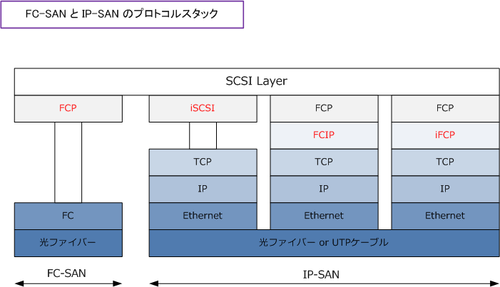
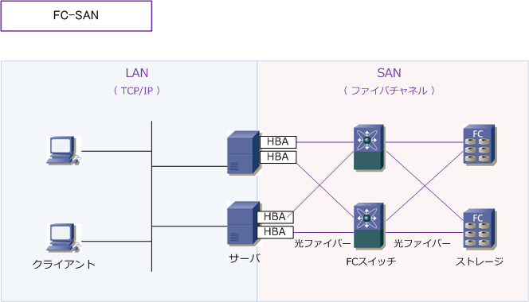
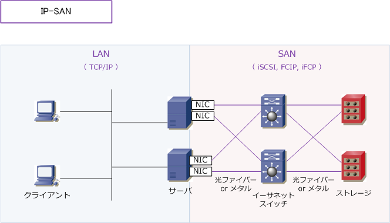
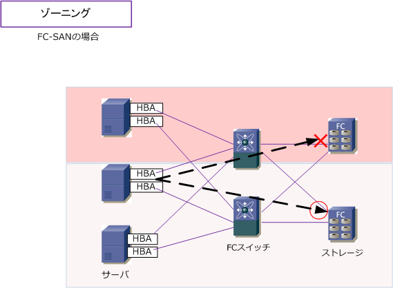
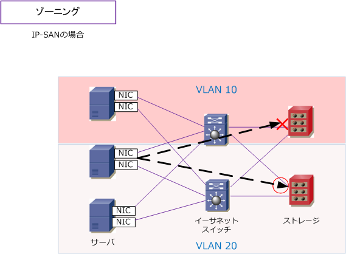

SAN ( Storage Area Network )
SANとは
SAN (Storage Area Network) とは、ストレージとサーバ間を接続する接続する高速ネットワークのこと。 SANにはFC-SANとIP-SANの2種類があります。簡単にいうと、ファイバチャネルを使用したネットワーク がFC-SAN、IPを使用したネットワークがIP-SANです。以下の表はFC-SAN、IP-SANの違いの比較表です。
| 項目 | FC-SAN | IP-SAN |
|---|---|---|
| ネットワーク | ファイバチャネルネットワーク | TCP/IPネットワーク |
| 導入機器 | ファイバチャネルスイッチ | LANスイッチ |
| インターフェース/ケーブル | HBA/光ファイバーケーブル | NIC/光ファイバーまたはメタルケーブル |
| プロトコル | ファイバチャネルプロトコル | iSCSI、FCIP、iFCP |
| ゾーニング | ソフトゾーニング / ハードゾーニング | VLAN |
| コスト | △ （ 高価格 ) | ◎ ( 低価格 ) |
| パフォーマンス | ◎ ( 高いパフォーマンス ） | ○ ( 高いパフォーマンス ） |
| 運用性/保守性 | △ ( FCの精通技術者が必要 ） | ◎ ( IPの精通技術者でOK ） |
FC-SANでは「高い導入費用とFCの専門知識が必要」ということもあり、SANの導入を控えていた企業も サーバの高性能化、イーサネット高速化（10G）、IP-SANの標準化により最近はSAN導入が進んでいます。
iSCSI：ストレージとサーバとの通信に使用するSCSIコマンドをカプセル化して、IPネットワーク上で送受信するプロトコル。 FCIP、iFCP：SANで流れるFCフレーム（ファイバチャネルコマンド）をカプセル化し、IPネットワークで送受信するプロトコル。
FC-SAN と IP-SAN のプロトコルスタック
ファイバーチャネルではTCP/IPプロトコルを使用せず、ファイバチャネルプロトコル（FCP）を使用します。

FC-SANとは
FC-SANの「FC」は“Fiber Channel”の略称です。ファイバチャネルとは、高速データ伝送方式の１つであり 1Gbps、2Gbps、4Gbps、8Gbps のデータ伝送を実現する技術。主にストレージネットワークで使用します。 FC-SANは「FCスイッチ」「HBA」「光ファイバーケーブル」の3つでストレージネットワークを構成します。
| FC-SAN の構成要素 | 説明 |
|---|---|
| FCスイッチ | SANスイッチとも言います。複数のサーバとストレージを束ねるスイッチ。 |
| HBA | Host Bus Adapter。ファイバーチャネルのインターフェースカード。 |
| 光ファイバーケーブル | サーバ⇔FCスイッチ間、ストレージ⇔FCスイッチ間を接続する光ファイバーケーブル |

IP-SANとは
IP-SANは、FC-SANのようにファイバチャネルネットワークではなく、TCP/IPネットワークを使用して通信 を行います。IP-SANではサーバ ⇔ ストレージ間で iSCSI or FCIP or iFCP などのプロトコルを使用します。 SANの部分では1Gbpsまたは10Gbps（推奨）のギガビットイーサネットスイッチで構築します。IP-SANでは 「イーサネットスイッチ、NIC、光ファイバーまたはUTPケーブル」でストレージネットワークを構成します。
| IP-SAN の構成要素 | 説明 |
|---|---|
| イーサネットスイッチ | 一般的に1Gbpsではなく、10Gbps対応のイーサネットスイッチを使用します。 |
| NIC | イーサネットのインターフェースカード。 |
| 光ファイバーケーブル or メタルケーブル |
サーバ⇔スイッチ、ストレージ⇔スイッチ間を接続する光ファイバー or メタルケーブル。 Direct Attatched ケーブル (10G SFP＋モジュールの付いたメタルケーブル) が機器間で 互換性あれば低コストなのでそれがよく使用されます。Direct Attatchedケーブルに互換性 がない場合、10Gbase-SR規格モジュールと光ファイバがセットで使用される事が多いです。 |

SAN - ゾーニングとは
複数のサーバで複数のストレージを共有することができるSAN環境では、ゾーニングという手法によって、 サーバとストレージ間のアクセスを制御することができる。ゾーニングにより、特定のサーバから接続できる ストレージ装置を制限したり（特定のディスク領域しか見えないようにしたり）して相互干渉を防止している。
| 2種類のゾーニング | 説明 |
|---|---|
| ソフトゾーニング | WWNゾーニングとも呼ばれます。サーバやストレージ装置のWWN（World Wide Name）と 呼ばれるアドレスに基づき、接続可能なサーバとストレージの組み合わせを決定する方法。 |
| ハードゾーニング | ポートゾーニングとも呼ばれます。FCスイッチのポートに基づき接続可能なサーバとストレージ の組み合わせを決定する方法。セキュリティ強度が高いのはこのハードゾーニングです。 |

IP-SANでは、このゾーニングは、VLANによって分離することも可能です。

SAN と NAS はどちらが高速処理できるのか
SANでは、NTFSなどのファイルシステムを介さず、ストレージにアクセス（ローデバイス方式）できるため、 ファイルシステムによるアクセスを行うNASよりも高速に処理することができます。ゆえに企業ネットワーク のネットワークストレージを構成する際には、一般的にNASではなくSANのネットワークが構築されています。
FC-SAN と IP-SAＮはどちらが高速処理できるのか
IP-SANではTCP/IPが使用されます。 TCP/IPは低速な通信インフラの時代に開発されたプロトコルであり、 大量のデータトラフィックが発生するストレージアクセスに向いておらず、TCP/IPプロトコル処理に負荷 がかかります。一方、TCP/IPを使用しないFC-SANはより高速に処理できます。以上から、同じ通信速度と 同じスペックのサーバの場合の高速処理できる順番は「① FC-SAN ⇒ ② IP-SAN ⇒ ③ NAS」となります。 ※ とはいえ冒頭で申し上げた通り、サーバの高性能化、10Gイーサネットスイッチなどで IP-SAN のインフラがかなり増えています。